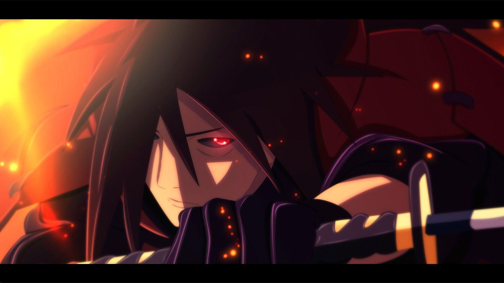

Madara's Story
AbhisekMadara was born during the Warring States Period, and was the eldest of Tajima Uchiha's five children. Madara and his siblings grew up on the battlefield waging constant war with the Uchiha's rivals: the Senju. Three of his siblings died young, leaving Madara with only his younger brother, Izuna. Madara and Izuna became very close through their shared loss and constantly competed with each other to get stronger. This, combined with his naturally strong chakra, enabled the young Madara to defeat adult Senju in battle and develop a reputation as a genius.
Uchiha Madara
During his infrequent downtime, Madara met a boy his own age named Hashirama. The two quickly developed a friendly rivalry, be it skipping stones or urinating in rivers. Like Madara, Hashirama was also a shinobi who had lost his brothers on the battlefield. Together they imagined a world where children like themselves wouldn't need to fight. As a precaution, Madara and Hashirama did not divulge their family names, but nevertheless discovered each other's identities: Madara was an Uchiha, Hashirama was a Senju; it was their duty to kill each other, even if they were friends. Needing to choose between his family and his dreams of peace, Madara chose to end his friendship with Hashirama so he would have no reservations over killing him in the future, a resolve strong enough to awaken his Sharingan. Over the following years Madara and Hashirama continued to meet in combat. Madara could never defeat Hashirama — even after acquiring a Mangekyō Sharingan — and Hashirama could never bring himself to kill someone he still considered a friend, resulting in a constant stalemate between the two that lasted decades. In time, both Madara and Hashirama became leaders of their respective clans, a position Hashirama tried to use to broker peace between them. Although some Uchiha found the offer increasingly tempting, Madara refused due to Izuna's death at the hands of Hashirama's own brother, Tobirama. Despite this, some Uchiha defected over to the Senju clan out of self-preservation. Madara then used Izuna's eyes in order to gain "eternal" Mangekyō Sharingan and restore his deteriorating vision. With this new power he waged one final assault against the Senju and was summarily defeated. Rather than kill Madara to bring the era of war to an end, Hashirama offered to kill himself if it would stop the fighting. Madara was moved by Hashirama's gesture and finally assented to peace.